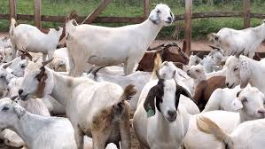

History
Shariff Goat Farming was founded in 2015 with a mission to provide the best quality goat meat and milk to our local community. Over the years, our farm has grown, and we now produce high-quality meat and milk for consumers across the region. Located in Garissa County, we are proud to contribute to the local economy and food security by raising healthy goats.
Our Vision
Our vision is to be the leading goat farming operation in Garissa County, recognized for our sustainable farming practices, high-quality products, and contributions to the community. We aim to ensure food security by providing nutritious meat and milk to our customers.
Our Mission
Our mission is to raise healthy goats using sustainable farming practices. We are dedicated to providing nutritious meat and milk products to our customers. Through responsible farming, we aim to contribute to food security, promote animal welfare, and support the local economy in Garissa County.
Core Values
- Sustainability in farming practices
- Commitment to quality and health
- Support for the local economy through job creation and community engagement